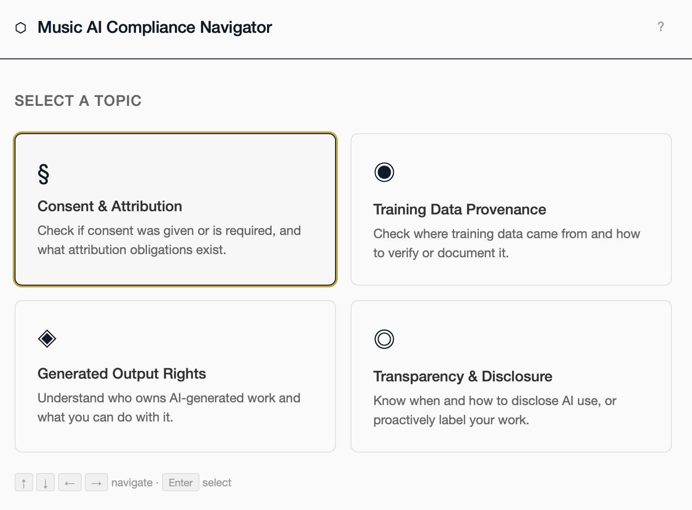

Portfolio · Berlin · 2026
Senior product designer for complex, technical products.
00 · Summary
First designer at Valispace, an engineering-led startup building systems engineering software. Valispace was acquired by Altium in 2023; my feature designs ship today in Altium 365.
01 · Shipped work
Example 1 · Master-Follower
User journeys and wireframes for requirements, verification and systems engineers, plus managers signing off, with accessible status indicators.
Aligned internal experts, external users and decision makers with a high-fidelity Figma prototype.
Example 2 · Verification Assignment Matrix
Turns user requirements and acceptance criteria into a scannable, many-to-many grid.
Traces each requirement to the activities that verify it, across methods run by different specialists.
Example 3 · Review Center
Built for constraints set by law and by industry standards, where every decision needs a record.
Global view with filtering and clear state, every rating logged for traceability.
02 · UX Founding Work
Building the design practice a startup didn't have yet.
01 · Prove the methods
Introduced UX interviews and prototype testing, iterating with expert users — proving the methods by using them.
02 · Get pulled across departments
Marketing, Solution Management and Development sought me out for visual consistency. Drafted design principles for website and product.
03 · Make it structural
Worked directly with the CTO, CPO, PM and dev leadership on product direction.
03 · Recent Work

Navigator · Independent · 2026
Turns EU AI Act, GDPR and accessibility law into concrete risks and next steps for a musician with no legal background.
Nominated for Mozilla · Shipped 2026
Case study ↗04 · References
"She took the initiative to start a cross-functional UX guild that brought designers and developers together to improve the overall user experience."
"In a very short time she learned a previously unknown field by talking to users and iterating fast with them on mockups and prototypes."
05 · Background
Education
Certifications
Skills
Recognition
2026 — Concept & Prototype, "Navigator" Mozilla Fellowship (nominated)
2022 — Innovation, Best Innovative App Concept Hack&Con (won)
2018 — Teamwork, Results, Innovation AppleCare Excellence Award, Apple (won)
2015 — Original Concept, Interactive Multimedia Installation George Verberg grant (nominee)
06 · Contact
Open to roles in Berlin or remote.